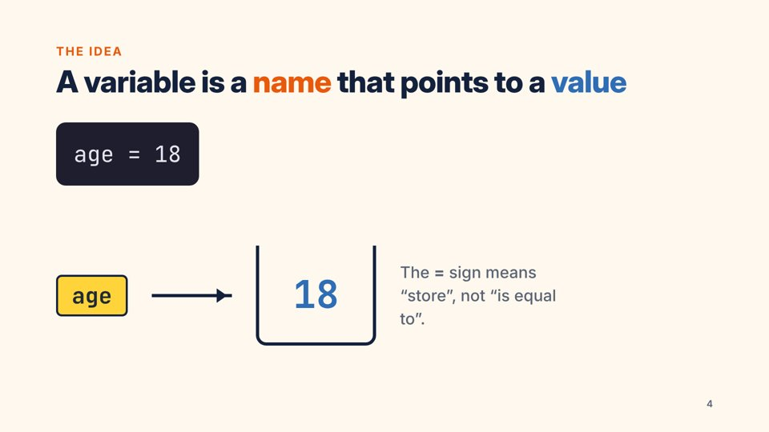
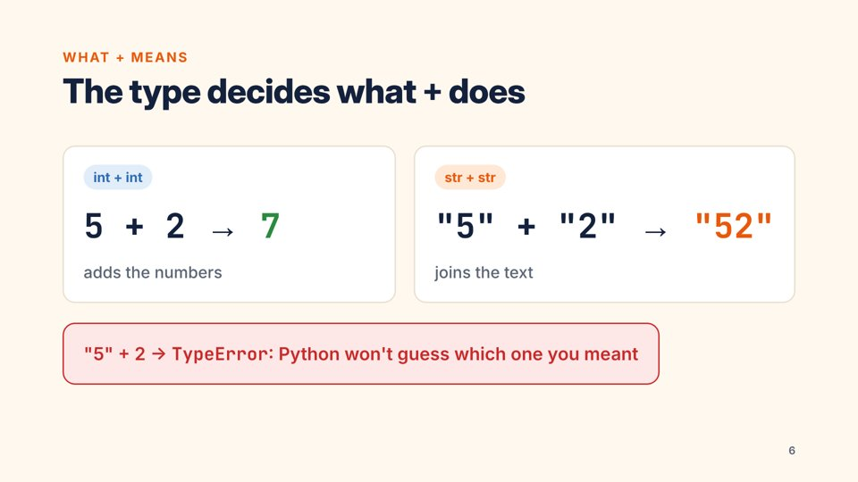
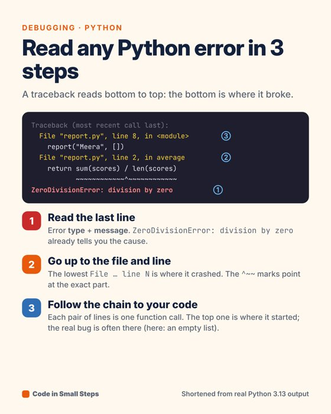
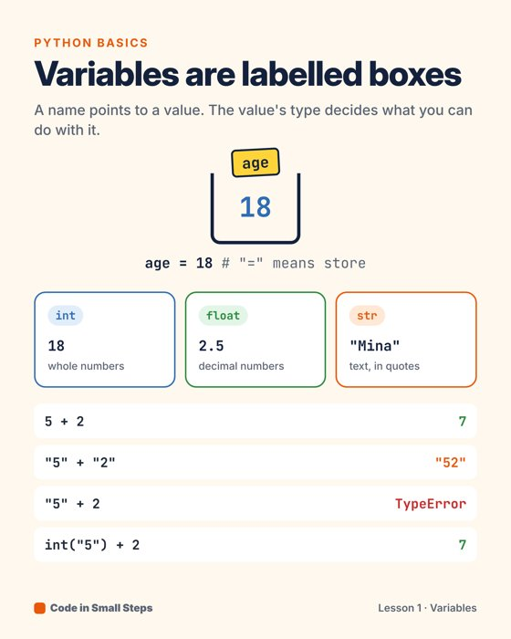
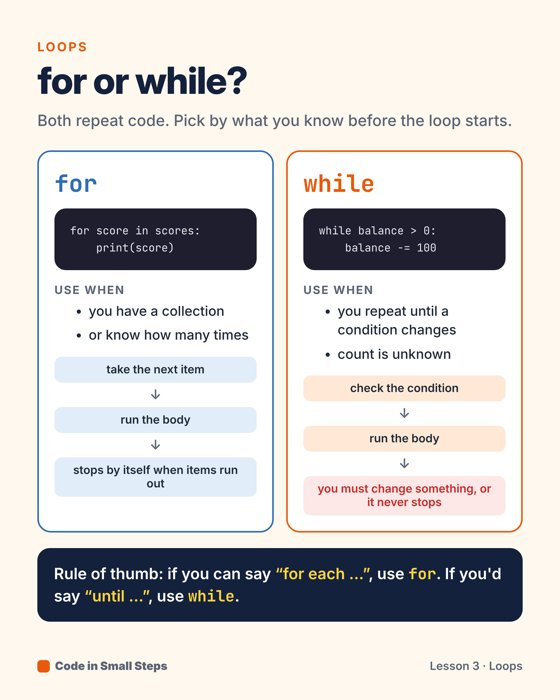

I plan, script, produce and edit beginner programming lessons for Code in Small Steps: 5-minute long-form videos, Shorts, slides, infographics and a free mini course, built around one rule: one idea, real output, then practice.
Three long-form lessons, each with a thumbnail, SEO metadata, chapters, captions and a 20-second end screen.
Each Short is cut from a long-form video and reframed for 9:16, with word-by-word captions and a hook in the first 2.6 seconds.
One brand across everything: cream, navy and orange, set in Inter and JetBrains Mono. Ligatures are turned off so >= looks the way beginners type it.





📘 Python in 5 Small Steps: a 5-lesson mini course outline with objectives, practice tasks and self-checks (PDF).
The same production pipeline is used for every lesson.
| Stage | What I do | Evidence |
|---|---|---|
| Plan | Personas, content pillars, a month-long calendar, a topic pipeline with search intent | channel plan |
| Script | Hook → demo → contrast → try it → common error → recap; every code sample verified | scripts |
| Produce | Three-point lighting, framing on thirds, a voice chain (HPF, compression, −14 LUFS), slides with build animations | production notes |
| Edit | Silence detection, flubbed takes removed, punch-in jump cuts, zooms and call-outs, ducked music | week 3 edit |
| Publish | SEO titles within 100 characters, chapters, tags, captions, end screens, cards, playlists, an altered-content disclosure | upload sheet |
The measured pre-launch quality numbers are below. Audience numbers start once the channel is live.
| Video | Length | Loudness | True peak | Captioned | Title |
|---|---|---|---|---|---|
| 01 Variables | 5:23 | −13.9 LUFS ✓ | −1.5 dBTP | 84 % of content time | 56 / 100 |
| 02 Read errors | 3:24 | −14.1 LUFS ✓ | −1.7 dBTP | 91 % | 70 / 100 |
| 03 If / else | 5:24 | −14.3 LUFS ✓ | −1.5 dBTP | 82 % | 70 / 100 |
analytics/first-week.csv and run python src/analytics.py; it writes the first-week table and charts into analytics/report.md. Targets for the first week: impressions CTR 4–10 %, at least 40 % average viewed, at least 60 % retention at 30 seconds.